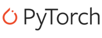
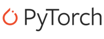

Meus Projetos
Potencial de Crescimento
Modelo de Machine Learning para previsão do potencial de crescimento de ações com base em indicadores financeiros.
- FastAPI
- Machine Learning
- Python
- JavaScript

Monitoramento Econômico
App com dashboard interativo para análise exploratória e visualização de indicadores econômicos de países sul-americanos.
- Streamlit
- Python
- Pandas
- Plotly
- Requests

Análise Inteligente de Notícias
Classificação automática de notícias com NLP, machine learning e visualização de dados.
- Pandas
- Scikit-learn
- NLTK
- Matplotlib
- HTML/CSS/JS
Web Scraping Essential Nutrition
Sistema automatizado para coleta de dados nutricionais do site Essential Nutrition, com suporte multi-navegador e processamento em lote.
- Python
- Selenium
- Pandas
- WebDriver
- BeautifulSoup
Classificação Ideológica de Ementas
Análise e classificação de posicionamento ideológico de ementas legislativas da câmara dos deputados.
- FastAPI
- Machine Learning
- NLTK
- Scikit-learn
- HTML/CSS/JS
CS2 Valuation API
API para avaliação de inventários de Counter-Strike 2, com scraping de preços, análise de Unidades de Armazenamento e classificação de itens.
- FastAPI
- Python
- Web Scraping
- Steam API
- JWT
Elite Skins CS2
Plataforma para comunidade de trading de skins de Counter-Strike 2, com sistema de grupos, ofertas e sorteios.
- HTML5
- CSS3
- JavaScript
- Bootstrap
- Responsive Design

Dashboard Analítico
Dashboard interativo para visualização de dados com processamento, filtros dinâmicos e múltiplas visualizações.
- Plotly.js
- FastAPI
- JavaScript
- Pandas
- CSS Avançado
Pão de Açucar Scraping
Web scraper automatizado para coletar dados nutricionais de produtos do Pão de Açúcar, utilizando técnicas avançadas de web scraping com Selenium.
- Python
- Selenium
- Pandas
- Web Scraping
- Docker

Scraper Integral Médica
Scraper automatizado para coleta de dados nutricionais de produtos da Integral Médica. Sistema com detecção automática de navegador e compatibilidade multiplataforma.
- Python
- Selenium
- BeautifulSoup
- Pandas
- WebDriver Manager
Scraping Max Titanium
Sistema de scraping automatizado para coleta de dados nutricionais de produtos Max Titanium do site europeu com menu interativo e detecção automática de navegador.
- Python
- Selenium
- BeautifulSoup
- WebDriver Manager
- CSV
Scraping Jasmine Alimentos
Sistema integrado de web scraping para coleta de dados nutricionais de produtos Jasmine Alimentos, com interface de menu interativo, detecção automática de navegador e coleta por categorias e filtros.
- Python
- Selenium
- WebDriver
- JSON/CSV/Excel
- CLI Interativo
Scraping The Coffee
Coletor de dados web para extrair informações nutricionais de produtos do site The Coffee, utilizando Selenium e Beautiful Soup.
- Python
- Web Scraping
- Selenium
- BeautifulSoup
- Pandas
Habilidades
 



Sobre Mim
Sou um desenvolvedor python com experiência em Ciência de Dados, apaixonado por tecnologia, aprendizado contínuo e criação de soluções com impacto real.
Currículo